BONSAI STYLES
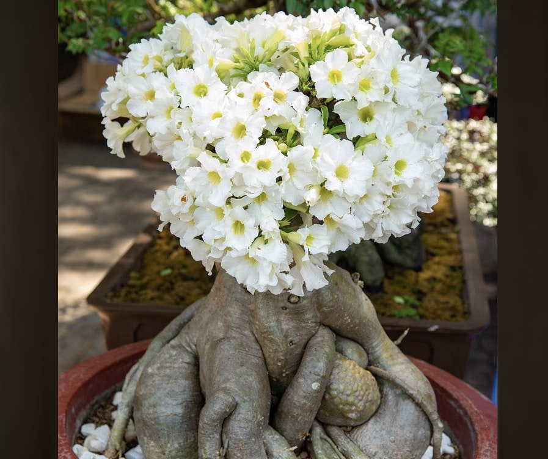
Creating the correct soil conditions and managing the roots and foliage effectively are the key to success with bonsai. It helps to know the natural habitat of your current tree since that gives you an idea of the conditions in which the foliage and roots will thrive.
MOYOGI /Informal Upright
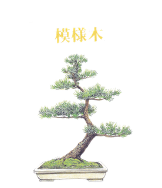
This is a variation on the formal upright style but is much easier to create. The rules for the branch structure are the same but the trunk may have any number of curves, both from left to right and from front to back. The tree illustrated is just one of the many variations on the informal upright style. Unlike the Formal Upright, Moyogi works equally well with deciduous and coniferous species. The branches should ideally grow from the outside of the curves and never on the inside as this creates a shock to the eye. The apex should lean towards the front.
CHOKKAN / Formal Upright
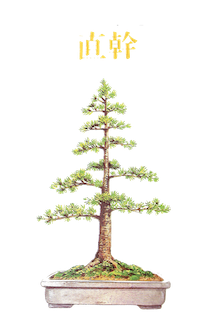
As the name implies, this is the most formalised of all styles. The trunk must be ramrod straight and bolt upright, tapering uniformly from base to tip. The branches should be arranged alternately either side of the trunk with every third branch to the rear. The branches should diminish in thickness and in length from the lowest one upwards, and should be either horizontal or sloping downwards. Ideally, the spaces between the branches should also diminish toward the top of the tree, in proportion to their thickness and length.
SHAKAN / Slanting
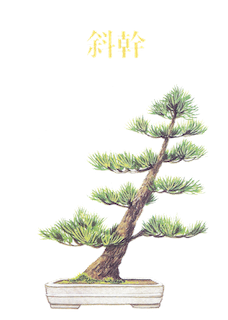
Another variation on the formal upright style, except that it is not upright. The trunk is usually straight-ish, although it may have a gentle curve or two. The placement of the branches needs to be carefully thought out in order to stabilise the design and to prevent the tree looking as if it is about to fall over. Unlike the previous two styles, the number and placement of the branches is less crucial, providing the opportunity for creativity. For instance, using only the top branches and training them down steeply can result in a dramatic image.
FUKINAGASHI / Windswept
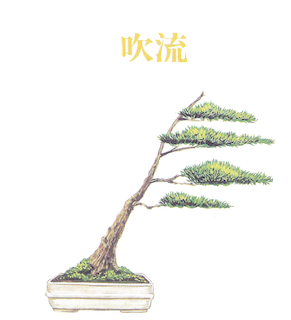
Although this is one of the more naturalistic styles, it is also one of the most dramatic. The aim is to capture the dynamic shape and movement of a tree living high in the mountains or on a clifftop, where it is constantly exposed to high prevailing winds. There are no rules governing the trunk shape or location of branches, but in spite of this freedom this is one of the most difficult styles to create successfully. The difficulty lies in making the image appear authentic, rather than merely looking like a tree with branches on one side. The trick is to ensure that the windswept effect begins at the base of the trunk and is reflected in every aspect of the tree.
HAN-KENGAI / Semi-Cascade
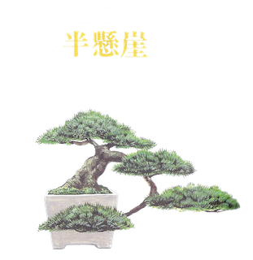
Both this style and the cascade style depict trees clinging to a cliff face, where they are beaten by snow, wind and rockfalls. The trunk should have dramatic curves and taper, and the branches should ideally also cascade from the trunk. Tradition states that the inverted ‘apex’ should be positioned directly below the base of the trunk when the tree is viewed from the ‘front’, but this can inhibit the design somewhat. These days it’s perfectly acceptable to allow the lowest point of the tree to be placed to one side of the pot, as if it was reaching out from a cliff face to find light. The one unbreakable rule is that the lowest point must be below the rim of the pot, but not its base.
KENGAI / Cascade
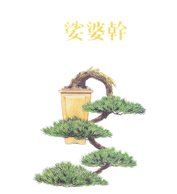
The difference between this style and the semi-cascade is that here the trunk must fall below the base of the pot. All other criteria are the same. Good cascades are rare because of the difficulty in maintaining vigour in the lower parts of the tree, opposing its natural urge to grow upwards. This is probably the most difficult of all styles to design convincingly, partly because of the horticultural problem, but mainly because we have few natural examples to recall as inspiration. It is important to include dramatic features and sharp angles to evoke the feeling of a tree clinging to life in the harsh mountain conditions.
SHARIMIKI / Driftwood style
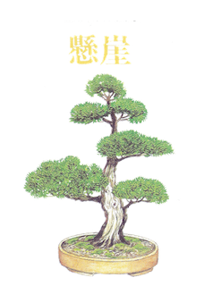
Echoing the natural appearance of mountain junipers, which produce areas of bare, sun-bleached wood as they age, this style is seldom successfully created from other species. The focal point is the beautiful and dramatic shapes of the grain in the exposed wood. These shapes may be natural but are more often elaborately carved and then bleached and preserved with lime-sulphur. The foliage masses, although acknowledging some of the rules of other styles, serve more as a foil or frame to the driftwood. This style is suitable for conifers and rarely, if ever, applied to deciduous species of bonsai tree.
HOKIDACHI / Broom style
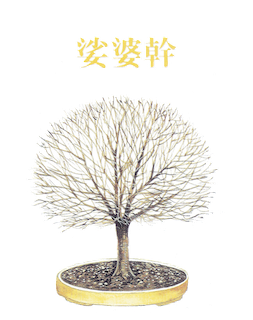
This style was modelled on the natural habit of the zelkova and is seldom successfully used for other than related species, since it works best with trees bearing alternate foliage. All branches should emerge from the top of a straight trunk and fork at regularly diminishing internals until a network of fine shoots at the tips forms an even-domed crown. For broom styles to work well, they must be perfectly symmetrical and meticulously trained and pruned to ensure an even and gradual transition from trunk, through heavy branches, to the finest terminal shoots. Trying to rush the development will always end in disappointment.
BUNJINGI / Literati
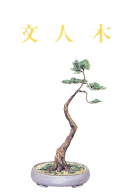
This style is reminiscent of ancient pines, which tend to shed their lower branches as they get old. It gets its name from the calligraphic style of ancient Chinese artists. The focal point of the design is the trunk, so it should be full of character. The branches are limited to the uppermost part of the trunk and should bear just enough foliage to keep the tree healthy and vigorous. The foliage should, however, be immaculately positioned. The pots used for literati styles are generally round and comparatively small to balance the sparse foliage. They are also frequently’rustic’ in appearance, to reflect the tree’s rocky habitat.
SEKIJÔJU / Root on Rock
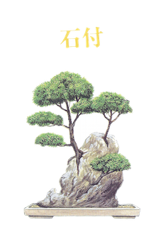
In rocky terrain the scarce soil is constantly being eroded, exposing the rocks and the roots of the trees growing amongst them. This style depicts such a tree whose roots, as they thicken, cling to any rocks beneath them. The tree itself can be of any style, although broom and formal upright styles look out of place. The most important factor is that the roots should cling tightly to the rock and should have a mature texture. This can take many years to accomplish. First, the root-covered rock must first be planted in the ground for several seasons to consolidate, and then exposed to the air and sun for the bark to develop mature characteristics.
SHARIMIKI / Driftwood
Echoing the natural appearance of mountain junipers, which produce areas of bare, sun-bleached wood as they age, this style is seldom successfully created from other species. The focal point is the beautiful and dramatic shapes of the grain in the exposed wood. These shapes may be natural but are more often elaborately carved and then bleached and preserved with lime-sulphur. The foliage masses, although acknowledging some of the rules of other styles, serve more as a foil or frame to the driftwood. This style is suitable for conifers and rarely, if ever, applied to deciduous species of bonsai tree.
IKADABUKI / Strait raft
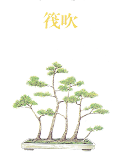
Another obvious one: a raft planting where the original trunk lies in a straight line. Most rafts created from nursery stock follow this style because of the difficulty of bending a fairly thick trunk into sinuous curves.In such cases the trunk is usually buried in the soil or covered with moss to disguise its unnatural appearance. The main problem to solve when making a straight raft is how to avoid a straight row of trunks. This can be achieved by training some branches horizontally forward or backward before bending them up to form trunks. It is even possible to create a fairly dense forest in this way.
NEAGARI / Exposed Roots
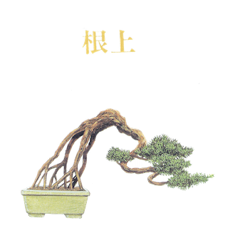
Most of us have driven down lanes where the steep banks have been washed away to expose the roots of an ancient beech or pine, and this style is based on such cases. The roots, which must have mature bark and interesting shapes, add a dramatic, rugged appearance, so the design of the tree itself should echo this. The foliage mass should be kept fairly small so that its weight or wind resistance doesn’t cause the exposed roots to bend over. You might find wild specimens that lend themselves to training in this style, but more often than not, growing from scratch is the easiest method.